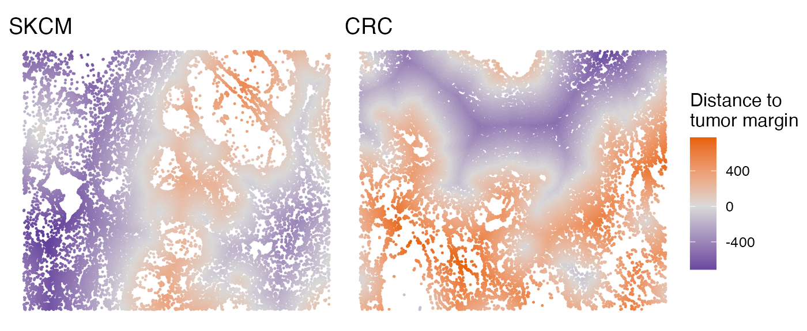
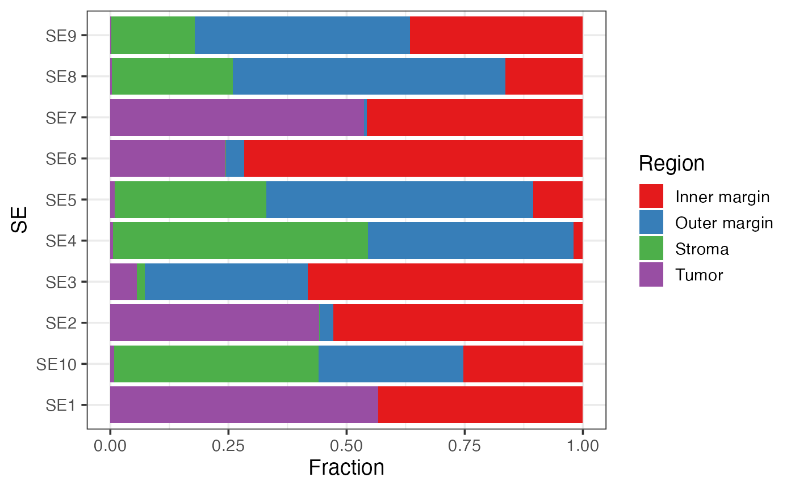

Discovery of Spatial Ecotypes from Multiple Samples
Integration.RmdOverview
In this tutorial, we will illustrate how to identify conserved
spatial ecotypes (SEs) across multiple samples using the
MultiSpatialEcoTyper function. Each sample represents a
single-cell spatial transcriptomics data, including a gene expression
profile and associated single-cell metadata.
First load required packages for this vignette
suppressPackageStartupMessages(library(dplyr))
suppressPackageStartupMessages(library(ggplot2))
suppressPackageStartupMessages(library(parallel))
suppressPackageStartupMessages(library(Seurat))
suppressPackageStartupMessages(library(data.table))
suppressPackageStartupMessages(library(googledrive))
suppressPackageStartupMessages(library(NMF))
suppressPackageStartupMessages(library(ComplexHeatmap))
library(SpatialEcoTyper)Loading data
In this tutorial, we will analyze single-cell spatial transcriptomics
data from cancer samples provided by Vizgen’s MERSCOPE FFPE
Human Immuno-oncology. Specifically, we will identify conserved SEs
from a melanoma sample and a colon cancer sample. For efficiency, we
have selected a subset region from each sample. You can download the
gene expression profiles and single-cell metadata here.
Text files as input
First, download the demo data from Google Drive
drive_deauth() # Disable Google sign-in requirement
drive_download(as_id("1CoQmU3u8MoVC8RbLUvTDQmOuJJ703HHB"), "HumanMelanomaPatient1_subset_counts.tsv.gz")
drive_download(as_id("1CgUOQKrWY_TG61o5aw7J9LZzE20D6NuI"), "HumanMelanomaPatient1_subset_scmeta.tsv")
drive_download(as_id("1ChwONUjr_yoURodnkDBj68ZUbjdHtmP6"), "HumanColonCancerPatient2_subset_counts.tsv.gz")
drive_download(as_id("1CipRjjD7cqzqKO0Yf4LUdsEw1XDzP6JS"), "HumanColonCancerPatient2_subset_scmeta.tsv")Then, load text files into R. You can use read.table for
small files or fread from the data.table
package for larger files.
# Load single-cell metadata
# Required columns: X, Y, CellType
# Recommend a Region column if pathologist region annotations are available
scmeta1 <- read.table("HumanMelanomaPatient1_subset_scmeta.tsv",
sep = "\t", header = TRUE, row.names = 1)
scmeta2 <- read.table("HumanColonCancerPatient2_subset_scmeta.tsv",
sep = "\t", header = TRUE, row.names = 1)
head(scmeta1[, c("X", "Y", "CellType", "Region")])## X Y CellType Region
## HumanMelanomaPatient1__cell_3655 1894.706 -6367.766 Fibroblast Stroma
## HumanMelanomaPatient1__cell_3657 1942.480 -6369.602 Fibroblast Stroma
## HumanMelanomaPatient1__cell_3658 1963.007 -6374.026 Fibroblast Stroma
## HumanMelanomaPatient1__cell_3660 1981.600 -6372.266 Fibroblast Stroma
## HumanMelanomaPatient1__cell_3661 1742.939 -6374.851 Fibroblast Stroma
## HumanMelanomaPatient1__cell_3663 1921.683 -6383.309 Fibroblast Stroma## X Y CellType Region
## HumanColonCancerPatient2__cell_1085 5057.912 -1721.871 Macrophage Inner margin
## HumanColonCancerPatient2__cell_1205 5035.339 -1783.352 Macrophage Inner margin
## HumanColonCancerPatient2__cell_1312 5012.093 -1908.390 Macrophage Inner margin
## HumanColonCancerPatient2__cell_1625 5073.743 -1861.740 Macrophage Inner margin
## HumanColonCancerPatient2__cell_1629 5030.235 -1867.441 Macrophage Inner margin
## HumanColonCancerPatient2__cell_1639 5020.448 -1882.751 Macrophage Inner margin
# Load single-cell gene expression data
scdata1 <- fread("HumanMelanomaPatient1_subset_counts.tsv.gz",
sep = "\t",header = TRUE, data.table = FALSE)
rownames(scdata1) <- scdata1[, 1]
scdata1 <- as.matrix(scdata1[, -1])
scdata2 <- fread("HumanColonCancerPatient2_subset_counts.tsv.gz",
sep = "\t",header = TRUE, data.table = FALSE)
rownames(scdata2) <- scdata2[, 1]
scdata2 <- as.matrix(scdata2[, -1])
# Match the cell ids in the meta data and gene expression data
scdata1 <- scdata1[, rownames(scmeta1)]
scdata2 <- scdata2[, rownames(scmeta2)]Sparse matrix as input
Mtx files can be loaded into R using the ReadMtx
function from the Seurat package.
drive_download(as_id("13M3xhRxp0xK9gf5F4DE9idSBFqVQIXDT"), "HumanMelanomaPatient1_subset_counts.mtx.gz")
drive_download(as_id("136feRaFjMtNvduLTm5xqa3WhyyoG4Xzo"), "HumanMelanomaPatient1_subset_cells.tsv.gz")
drive_download(as_id("13QprWzJhzzUy_w3XSrjlt9pjf2n-G7HV"), "HumanMelanomaPatient1_subset_genes.tsv.gz")
drive_download(as_id("17fH9BAAugYi1FMLrMuTxojtOoklFBB-K"), "HumanColonCancerPatient2_subset_counts.mtx.gz")
drive_download(as_id("17a1f1VjxJSje_uyPt6zA97zTps9ko6rk"), "HumanColonCancerPatient2_subset_cells.tsv.gz")
drive_download(as_id("17fH0jE5b2YqJ5fpQtYil27k-7YhzArD6"), "HumanColonCancerPatient2_subset_genes.tsv.gz")
scdata1 <- ReadMtx(mtx = "HumanMelanomaPatient1_subset_counts.mtx.gz", cells = "HumanMelanomaPatient1_subset_cells.tsv.gz", features = "HumanMelanomaPatient1_subset_genes.tsv.gz", feature.column = 1, cell.column = 1)
scdata2 <- ReadMtx(mtx = "HumanColonCancerPatient2_subset_counts.mtx.gz", cells = "HumanColonCancerPatient2_subset_cells.tsv.gz", features = "HumanColonCancerPatient2_subset_genes.tsv.gz", feature.column = 1, cell.column = 1)Data normalization
Before proceeding with the SpatialEcoTyper analysis, the gene
expression data should be normalized. This can be done using either NormalizeData
or SCTransform.
Here, we will use SCTransform
normalization. For faster computation, it is recommended to install the
glmGamPoi package.
if(!"glmGamPoi" %in% installed.packages()){
BiocManager::install("glmGamPoi")
}
tmpobj1 <- CreateSeuratObject(scdata1) %>%
SCTransform(clip.range = c(-10, 10), verbose = FALSE)
tmpobj2 <- CreateSeuratObject(scdata2) %>%
SCTransform(clip.range = c(-10, 10), verbose = FALSE)
seurat_version = as.integer(gsub("\\..*", "", as.character(packageVersion("SeuratObject"))))
if(seurat_version<5){
normdata1 <- GetAssayData(tmpobj1, "data")
normdata2 <- GetAssayData(tmpobj2, "data")
}else{
normdata1 <- tmpobj1[["SCT"]]$data
normdata2 <- tmpobj2[["SCT"]]$data
}To use NormalizeData for the
normalization:
normdata1 <- NormalizeData(scdata1)
normdata2 <- NormalizeData(scdata2)Preview of the samples
The melanoma sample includes spatial expression data for 500 genes across 27,907 cells, while the colon cancer sample contains data for 38,080 cells. In both samples, cells were categorized into ten distinct cell types: B cells, CD4+ T cells, CD8+ T cells, NK cells, plasma cells, macrophages, dendritic cells (DCs), fibroblasts, endothelial cells, and cancer cells of origin (CCOs). Due to their high heterogeneity, CCOs were excluded from the analysis.
You can use the SpatialView function to visualize the
spatial distribution of single cells within the tissues:
# Visualize the cell type annotations in the tissue
p1 <- SpatialView(scmeta1, by = "CellType") + labs(title = "SKCM") +
scale_color_manual(values = pals::kelly()[-1]) + theme(legend.position = "none")
p2 <- SpatialView(scmeta2, by = "CellType") + labs(title = "CRC") +
scale_color_manual(values = pals::kelly()[-1])
p1 + p2
All spatial regions were annotated into four groups: tumor, inner
margin, outer margin, and stroma. The tumor and stroma regions were
defined based on the density of cancer cells. The inner and outer
margins were delineated as regions extending 250 μm inside and outside
the tumor boundaries, respectively. The SpatialView
function can also be used to visualize these regions.
# Visualize the regions in the tissue
p1 <- SpatialView(scmeta1, by = "Region") + labs(title = "SKCM") +
scale_color_brewer(type = "qual", palette = "Set1") +
theme(legend.position = "none")
p2 <- SpatialView(scmeta2, by = "Region") + labs(title = "CRC") +
scale_color_brewer(type = "qual", palette = "Set1")
p1 + p2
You can also visualize continuous characteristics, such as the
minimum distance of each single cell to the tumor/stroma margin, or
specific gene expression levels, using the SpatialView
function:
# Visualize the distance to tumor margin
p1 <- SpatialView(scmeta1, by = "Dist2Interface") + labs(title = "SKCM") +
scale_colour_gradient2(low = "#5e3c99", high = "#e66101", mid = "#d9d9d9", midpoint = 0) +
theme(legend.position = "none")
p2 <- SpatialView(scmeta2, by = "Dist2Interface") + labs(title = "CRC") +
scale_colour_gradient2(low = "#5e3c99", high = "#e66101", mid = "#d9d9d9", midpoint = 0)
p1 + p2
## Visualize gene expression in the tissue
gg <- scmeta1
gg$Expression <- normdata1["STAT1", ]
p1 <- SpatialView(gg, by = "Expression") + scale_color_viridis_c()
gg <- scmeta2
gg$Expression <- normdata2["STAT1", ]
p2 <- SpatialView(gg, by = "Expression") + scale_color_viridis_c()
p1 + p2SpatialEcoTyper analysis across multiple samples
The MultiSpatialEcoTyper function enables the
integration of single-cell spatial transcriptomics data across multiple
samples, facilitating the identification of SEs shared across samples or
cancer types. The analysis is performed in three stages: -
Independent SpatialEcoTyper Analysis: SpatialEcoTyper
is run on each sample independently to identify spatial clusters and
construct cell-type-specific gene expression profiles for all spatial
clusters. - Integration via Similarity Network Fusion:
Spatial clusters from different samples are integrated to learn a
unified embedding using Similarity Network Fusion (Wang et al., 2014). -
NMF Clustering: Non-negative Matrix Factorization (NMF)
is applied to the unified embedding to identify conserved SEs across
samples.
Key arguments for MultiSpatialEcoTyper
-
data_listA named list of expression matrices where each matrix represents gene expression data for a sample. The columns of each matrix correspond to cells, and the rows correspond to genes. The list names should match sample names; otherwise, samples will be named as ‘Sample1’, ‘Sample2’, etc. -
metadata_listA named list of metadata data frames, where each data frame contains metadata corresponding to the cells in the expression matrices. Each metadata data frame should include at least three columns (X, Y, CellType), and the row names should match the cell IDs (column names) in the expression matrix. -
outdirDirectory where the results will be saved. Defaults to the current directory with a subdirectory named “SpatialEcoTyper_results_” followed by the current date. -
normalization.methodMethod for normalizing the expression data. Options include “None” (default), “SCT”, or other methods compatible with Seurat’sNormalizeDatafunction. -
nmf_ranksInteger or vector specifying the number of clusters (10 by default). If a vector is provided, the function tests all ranks and selects the optimal rank for NMF, though this may increase computation time. -
radiusNumeric specifying the radius (in the same units as spatial coordinates) for defining spatial neighborhoods around each cell. Default is 50. -
min.cts.per.regionInteger specifying the minimum number of cell types (default: 2) required for a microregion. -
RegionColumn name in metadata data frames containing pathologist region annotation (default: NULL). -
ncoresInteger specifying the number of cores for parallel processing. Default is 1.
You can type ?MultiSpatialEcoTyper to visualize the full
manual.
Preparing data
data_list <- list(SKCM = normdata1, CRC = normdata2)
metadata_list <- list(SKCM = scmeta1, CRC = scmeta2)Important note: In the examples below, we will use
10 clusters and 5 runs per rank for demonstration purposes. To select
the optimal number of clusters and obtain robust results, you can use
the nmf_ranks argument with a vector of integers to test
multiple ranks for NMF analysis and set nrun.per.rank to 30
or higher. You can also use the nmfClustering function for
a detailed rank selection process, as outlined in the next section
(NMF clustering for SpatialEcoTyper).
Pathologist region annotation unavailable
MultiSpatialEcoTyper(data_list, metadata_list,
normalization.method = "None",
nmf_ranks = 10, # Number of clusters
nrun.per.rank = 5, # Recommend 30 or higher for robust results
ncores = 2)
# This step takes ~5 minutes on a macOS with an Apple M1 Pro chip and 16 GB memory.Pathologist region annotation available
If region annotations are available, we recommend to include the
region annotations in all metadata and specify the Region
in the MultiSpatialEcoTyper function, which could improve
integration accuracy.
MultiSpatialEcoTyper(data_list, metadata_list,
normalization.method = "None",
nmf_ranks = 10, # Number of clusters
nrun.per.rank = 5, # Recommend 30 or higher for robust results
Region = "Region", # Use pathologist annotations if available
ncores = 2)## agg_png
## 2
## This step takes ~5 minutes to complete on macOS with an Apple M1 Pro chip and 16 GB memory.Using pre-existing SpatialEcoTyper results
If you’ve already run SpatialEcoTyper for each sample,
you can integrate the results directly using
IntegrateSpatialEcoTyper.
drive_download(as_id("1nlecuQ90md15oYMKGVES68TaSoKHwZIg"), "CRC_SpatialEcoTyper_results.rds", overwrite = TRUE)
drive_download(as_id("1nXwimQCgSqcq5NJR4kOtF4xoJoNGlT5t"), "SKCM_SpatialEcoTyper_results.rds", overwrite = TRUE)
data_list <- list(SKCM = normdata1, CRC = normdata2)
SpatialEcoTyper_list <- list(SKCM = readRDS("SKCM_SpatialEcoTyper_results.rds"),
CRC = readRDS("CRC_SpatialEcoTyper_results.rds"))
IntegrateSpatialEcoTyper(SpatialEcoTyper_list, data_list,
outdir = "SpatialEcoTyper_results/",
normalization.method = "None",
nmf_ranks = 10, # Number of clusters
nrun.per.rank = 5, # recommend 30 or higher for robust results
ncores = 2)
# This step takes ~5 minutes on a macOS with an Apple M1 Pro chip and 16 GB memory.Output results
All results will be saved in the specified directory
(outdir) with a subdirectory named
SpatialEcoTyper_results_ followed by the current date. The
output files include:
- **{SampleName}_SpatialEcoTyper_results.rds** Contains the
SpatialEcoTyperresults for each sample. - MultiSE_integrated_final.rds A matrix representing the fused similarity matrix of spatial clusters across all samples.
- MultiSE_integrated_final_hmap.pdf A heatmap visualizing the fused similarity matrix of spatial clusters, grouped by samples and SEs.
-
MultiSE_metadata_final.rds Single-cell metadata
with an
SEcolumn annotating the discovered SEs, saved as an RDS file. -
MultiSE_metadata_final.tsv The same as
MultiSE_metadata_final.rds, but saved in TSV format. - MultiSE_NMF_Cophenetic_Dynamics.pdf A figure showing the cophenetic coefficients for different numbers of clusters, available when multiple ranks were provided for NMF analysis.
-
MultiSE_NMF_results.rds The NMF result derived from
the
nmfClusteringfunction. If a single rank was provided, it contains anNMFfitX1object . If multiple ranks were provided, it is alistcontaining the optimal number of communities (bestK), a list ofNMFfitX1objects (NMFfits), and aggplotobject (p) displaying the cophenetic coefficient for different cluster numbers.
The results for the demo data can be downloaded from MultiSpatialEcoTyper_results
NMF clustering for SpatialEcoTyper
SpatialEcoTyper uses NMF to group spatial clusters from multiple samples into conserved SEs. To determine the optimal number of clusters, or rank, we computed cophenetic coefficient, which quantifies the classification stability for a given rank (i.e., the number of clusters) and ranges from 0 to 1, with 1 indicating maximally stability. Typically, the rank at which the cophenetic coefficient begins to decrease is chosen. However, this method can be challenging when the cophenetic coefficient exhibits a multi-modal shape across different ranks. In such cases, for SpatialEcoTyper analysis, we recommend selecting the number of SEs after which the coefficient drops below 0.95 by default.
Selecting the optimal rank
To determine the optimal rank, you can use the
nmfClustering function, which tests multiple ranks and
computes the cophenetic coefficient for each. This analysis requires the
fused similarity network matrix
(MultiSE_integrated_final.rds) generated from previous
step.
The integrated similarity matrix and metadata for the demo can be downloaded via:
drive_download(as_id("1noLABiQEyfwlVDqZ_uYZ4haooxaI7CM6"), "MultiSE_integrated_final.rds")
drive_download(as_id("1nrXWdvBJPkZRqg0IdP288_oGu-1qPl7A"), "MultiSE_metadata_final.rds")Load the files into R:
## A matrix representing the fused similarity matrix of spatial clusters across all samples
integrated = readRDS("MultiSE_integrated_final.rds")
dim(integrated)## [1] 376 376
head(integrated)## SKCM..InitSE6 SKCM..InitSE111 SKCM..InitSE42 SKCM..InitSE55
## SKCM..InitSE6 2.0447538 0.99167217 0.9880337 1.5250877
## SKCM..InitSE111 0.9865852 1.60202235 1.3644368 -1.1892531
## SKCM..InitSE42 0.9765806 1.27602346 1.7474007 1.0338111
## SKCM..InitSE55 1.5146425 -1.16041105 1.0424169 1.8449934
## SKCM..InitSE13 1.6362625 0.06487046 1.1509302 1.6798517
## SKCM..InitSE50 1.6389801 1.89546165 0.1521341 0.9578651
## SKCM..InitSE13 SKCM..InitSE50 SKCM..InitSE110 SKCM..InitSE124
## SKCM..InitSE6 1.67070324 1.6929349 1.3763488 -0.8503188
## SKCM..InitSE111 0.07809987 1.9253443 0.4461594 -1.1772473
## SKCM..InitSE42 1.09062161 0.1367765 0.4752441 0.4362581
## SKCM..InitSE55 1.65660756 0.9783080 1.3150863 1.4145300
## SKCM..InitSE13 1.52407998 1.3403715 0.8254406 -0.5334410
## SKCM..InitSE50 1.39036628 2.4200233 0.1318742 0.3832252
## SKCM..InitSE87 SKCM..InitSE43 SKCM..InitSE38 SKCM..InitSE10
## SKCM..InitSE6 1.4277558 1.4703727 1.23099933 0.2061672
## SKCM..InitSE111 0.8939488 0.3902353 1.14345222 0.6487060
## SKCM..InitSE42 0.8618012 0.8542857 1.15468489 0.3899214
## SKCM..InitSE55 0.8771929 0.8956717 1.26235329 1.7074194
## SKCM..InitSE13 0.2016129 0.8884719 1.52038318 1.5516376
## SKCM..InitSE50 1.1197435 0.8532590 0.01234026 1.1904895
## SKCM..InitSE95 SKCM..InitSE39 SKCM..InitSE69 SKCM..InitSE155
## SKCM..InitSE6 0.3624619 0.52778079 0.2160835 1.4528197
## SKCM..InitSE111 1.4201895 -0.96359388 0.9060149 -0.6386942
## SKCM..InitSE42 0.7713103 0.83412766 1.0285574 1.6311085
## SKCM..InitSE55 1.2928949 0.95729679 1.1328357 0.6168050
## SKCM..InitSE13 1.5602079 1.47769474 1.0087162 -0.3727056
## SKCM..InitSE50 0.1734748 -0.02742891 1.7565677 -0.3038605
## SKCM..InitSE112 SKCM..InitSE81 SKCM..InitSE28 SKCM..InitSE4
## SKCM..InitSE6 0.04130574 -0.2909562 1.79123484 1.83923685
## SKCM..InitSE111 1.27344912 0.5097566 -0.08445442 1.23882617
## SKCM..InitSE42 0.95084518 0.9728683 0.79487252 0.32509825
## SKCM..InitSE55 1.37609615 0.6743427 1.52604151 1.68799584
## SKCM..InitSE13 1.43675464 0.9721279 1.57102703 1.65530435
## SKCM..InitSE50 1.33287777 0.3732186 -0.33491355 0.03954437
## SKCM..InitSE94 SKCM..InitSE127 SKCM..InitSE56 SKCM..InitSE23
## SKCM..InitSE6 1.23305919 -0.3555864 0.6381302 1.4409519
## SKCM..InitSE111 1.17698252 1.5940740 1.1769528 0.9201222
## SKCM..InitSE42 1.39032971 1.3181263 0.7521398 1.4395025
## SKCM..InitSE55 0.63713447 1.7427782 1.3211806 1.4589759
## SKCM..InitSE13 0.43838992 1.6086150 1.5676017 0.2402514
## SKCM..InitSE50 -0.09058462 1.4895045 1.3158163 0.8223932
## SKCM..InitSE33 CRC..InitSE5 CRC..InitSE49 CRC..InitSE89
## SKCM..InitSE6 -0.09446831 1.0278779 1.4611700 0.49480949
## SKCM..InitSE111 -0.61050566 -0.4089102 -0.3168144 1.41253888
## SKCM..InitSE42 1.48841850 1.4199500 1.2218816 1.59758910
## SKCM..InitSE55 1.57794955 1.6592150 0.5279302 0.69603678
## SKCM..InitSE13 0.51840867 0.3641642 0.4106555 1.08043938
## SKCM..InitSE50 0.89845664 0.1216877 0.5871344 -0.04282478
## CRC..InitSE25 CRC..InitSE66 CRC..InitSE13 CRC..InitSE86
## SKCM..InitSE6 0.10327609 1.5508198 1.2813460 1.96700482
## SKCM..InitSE111 -0.15575650 1.0267554 1.0433337 -0.05933203
## SKCM..InitSE42 0.85898365 1.6624793 0.9887095 1.33284345
## SKCM..InitSE55 0.75874701 1.1329224 0.8302626 -0.35063143
## SKCM..InitSE13 0.38738715 1.5865399 1.1377092 1.11752974
## SKCM..InitSE50 -0.02152954 -0.4312809 -0.6112432 0.41409014
## CRC..InitSE2 CRC..InitSE70 CRC..InitSE62 CRC..InitSE121
## SKCM..InitSE6 1.3083362 -0.3004062 0.97400429 -0.9570807
## SKCM..InitSE111 1.2888351 1.6061100 0.43786550 1.0056541
## SKCM..InitSE42 0.8297627 0.5307492 1.29214932 0.7457029
## SKCM..InitSE55 1.0605662 1.4201705 0.77086548 1.0543132
## SKCM..InitSE13 1.3552499 0.6201750 -0.06816334 0.6583814
## SKCM..InitSE50 1.2109264 1.2912590 1.39587977 1.2626405
## CRC..InitSE47 CRC..InitSE0 CRC..InitSE153 CRC..InitSE58
## SKCM..InitSE6 0.28661808 1.5390889 -1.1267169 1.74967123
## SKCM..InitSE111 1.01309941 0.3047912 1.5756936 -0.06568565
## SKCM..InitSE42 1.19220600 1.3971420 1.4861845 1.70457544
## SKCM..InitSE55 1.29984220 0.8085059 1.2048135 1.50117379
## SKCM..InitSE13 0.87152494 1.1757104 0.5764798 0.93360335
## SKCM..InitSE50 0.04591858 1.2949932 1.8810563 1.48588348
## CRC..InitSE33 SKCM..InitSE83 SKCM..InitSE76 SKCM..InitSE68
## SKCM..InitSE6 1.3708170 -0.2253874 -0.08640053 0.7581671
## SKCM..InitSE111 0.8187906 0.6595348 -0.05506245 -0.3612963
## SKCM..InitSE42 1.6219582 1.6967926 0.11930740 0.7087406
## SKCM..InitSE55 1.7957926 0.3598913 -0.19303511 0.1231302
## SKCM..InitSE13 1.2955889 0.2746036 -0.02160251 0.3246168
## SKCM..InitSE50 1.4691304 -0.4281836 0.18953631 0.1689287
## SKCM..InitSE98 SKCM..InitSE126 SKCM..InitSE75 CRC..InitSE136
## SKCM..InitSE6 1.6467866 -0.6337261 -0.04935467 1.03101509
## SKCM..InitSE111 -0.2867218 0.3671176 0.42295200 -0.42471093
## SKCM..InitSE42 1.5110183 0.9977913 1.59173141 0.31609927
## SKCM..InitSE55 -0.4940659 0.3561714 1.51925123 0.50813133
## SKCM..InitSE13 0.1682091 -0.0575114 0.12657664 0.04240356
## SKCM..InitSE50 -0.2993110 -0.6872858 -0.21757716 1.33828510
## CRC..InitSE79 CRC..InitSE144 CRC..InitSE156 CRC..InitSE18
## SKCM..InitSE6 -0.67093384 -0.7259141 -0.28283803 1.2676758
## SKCM..InitSE111 0.72878000 -0.4976085 0.64645989 1.4654821
## SKCM..InitSE42 -0.23385028 0.4880142 0.97465126 0.8467190
## SKCM..InitSE55 1.26982031 -0.4202854 0.19985003 1.3063293
## SKCM..InitSE13 -0.08831719 0.5503742 1.45012627 0.9754857
## SKCM..InitSE50 -1.20428718 -0.6419426 -0.08057411 1.3831916
## CRC..InitSE44 CRC..InitSE85 CRC..InitSE84 CRC..InitSE114
## SKCM..InitSE6 1.1457013 1.5275167 0.5154155 -0.4056578
## SKCM..InitSE111 -0.6780717 1.2307674 -0.3870914 0.8703057
## SKCM..InitSE42 0.8693314 1.5888156 1.1402686 1.1445055
## SKCM..InitSE55 1.6848516 0.4149718 0.6390621 0.5397543
## SKCM..InitSE13 0.8209301 1.5368168 1.1675146 0.2328207
## SKCM..InitSE50 -0.4328809 1.6326440 -0.5026766 -0.4844415
## CRC..InitSE104 CRC..InitSE108 CRC..InitSE115 CRC..InitSE67
## SKCM..InitSE6 1.08163117 0.79106629 0.327922561 1.6077340
## SKCM..InitSE111 -0.40767336 -0.85853814 -0.002258183 -0.4333030
## SKCM..InitSE42 0.99505261 0.17400885 0.903760071 1.0954541
## SKCM..InitSE55 1.52564129 -0.01542236 0.095013396 1.3768149
## SKCM..InitSE13 -0.02529299 1.12089402 1.141682861 1.0464375
## SKCM..InitSE50 -0.88215996 0.02910095 -0.018117466 0.2848448
## CRC..InitSE10 CRC..InitSE24 CRC..InitSE55 CRC..InitSE82
## SKCM..InitSE6 0.8972671 0.1503097 1.0433533 -0.21040897
## SKCM..InitSE111 1.3080052 -0.2897155 1.4351334 -0.03573202
## SKCM..InitSE42 1.3375973 1.0450394 1.1054917 1.04124635
## SKCM..InitSE55 0.3615457 -0.1152977 -0.2581054 0.34651858
## SKCM..InitSE13 1.3878487 1.0473489 1.2115091 0.64550413
## SKCM..InitSE50 0.8122503 0.2599412 1.2345885 0.68244843
## CRC..InitSE128 CRC..InitSE101 CRC..InitSE30 CRC..InitSE32
## SKCM..InitSE6 1.1709308 0.7118526 1.7151287 1.54535048
## SKCM..InitSE111 0.3423715 -0.6124269 -0.3063832 1.02928905
## SKCM..InitSE42 0.8040750 0.5923373 0.1395729 0.84098199
## SKCM..InitSE55 1.0514556 0.3946526 0.7909068 0.55763197
## SKCM..InitSE13 0.3728373 0.8669314 -0.3381610 0.90992175
## SKCM..InitSE50 0.7429637 1.3633720 0.8599015 -0.02634277
## CRC..InitSE16 CRC..InitSE68 CRC..InitSE26 CRC..InitSE39
## SKCM..InitSE6 0.34310179 1.18393837 0.9621673 0.4698374
## SKCM..InitSE111 0.76613471 0.54729619 0.3577045 -0.7079088
## SKCM..InitSE42 0.80391871 1.22659039 1.2926111 1.2753878
## SKCM..InitSE55 0.08075999 0.02286881 0.5691725 1.3822141
## SKCM..InitSE13 1.15724936 1.43519759 1.2415376 0.9826128
## SKCM..InitSE50 1.40178798 1.75391650 1.5889043 1.3312755
## CRC..InitSE150 SKCM..InitSE3 SKCM..InitSE160 SKCM..InitSE8
## SKCM..InitSE6 -0.36518227 1.8738050 -0.5118961 -0.5441181
## SKCM..InitSE111 -0.39695547 1.5308154 -0.6123223 -0.1537143
## SKCM..InitSE42 0.57788034 -0.3319223 0.7062283 0.4578466
## SKCM..InitSE55 1.20279777 0.8857715 0.5482197 0.7770385
## SKCM..InitSE13 -0.05095096 0.8013748 -0.3006858 0.3534519
## SKCM..InitSE50 0.50387772 -0.5234318 0.0835811 -0.3196609
## SKCM..InitSE85 CRC..InitSE40 CRC..InitSE37 CRC..InitSE29
## SKCM..InitSE6 1.6853410 0.13069436 1.6504824 0.6057498
## SKCM..InitSE111 -0.9817945 -0.04075422 0.0182466 -0.9038123
## SKCM..InitSE42 1.4529638 0.22953301 1.4746828 1.2089701
## SKCM..InitSE55 -0.3485159 -0.51923049 0.2503790 0.1745437
## SKCM..InitSE13 0.0846155 0.03951026 0.4057760 0.6853416
## SKCM..InitSE50 0.8257399 -0.31516150 0.2346960 -0.6907591
## CRC..InitSE131 CRC..InitSE73 CRC..InitSE11 CRC..InitSE12
## SKCM..InitSE6 0.7527420 1.2850382 0.5698905 0.3178576
## SKCM..InitSE111 -0.3069674 1.4660881 -1.1696359 -0.6371424
## SKCM..InitSE42 1.5428822 0.5935241 1.3684661 1.3141242
## SKCM..InitSE55 0.5190039 0.8703519 0.9736545 0.8298164
## SKCM..InitSE13 -0.4079783 -0.5991511 1.2693697 0.7680065
## SKCM..InitSE50 1.6246404 -0.5650857 1.6143000 1.2564579
## SKCM..InitSE59 SKCM..InitSE135 SKCM..InitSE89 SKCM..InitSE159
## SKCM..InitSE6 1.5155567 -0.15378016 0.1922449 0.08523919
## SKCM..InitSE111 -0.9080414 0.32798546 -0.0403301 0.08997971
## SKCM..InitSE42 1.4864919 0.35734810 0.1696808 0.47944776
## SKCM..InitSE55 -0.1657214 -0.01972605 -0.1607731 -0.03994485
## SKCM..InitSE13 0.5887961 -0.30226992 -0.4048663 -0.58744739
## SKCM..InitSE50 -0.1724782 1.31318536 0.1973593 0.17546026
## SKCM..InitSE58 SKCM..InitSE82 SKCM..InitSE130 SKCM..InitSE74
## SKCM..InitSE6 1.016931e+00 1.0625699 0.7648377 1.5749766
## SKCM..InitSE111 1.743804e-01 0.3520452 0.7832048 -0.5243845
## SKCM..InitSE42 2.326243e-01 0.8087696 -0.2253419 0.2338333
## SKCM..InitSE55 -1.135521e-01 0.3030530 0.4345258 -0.6747926
## SKCM..InitSE13 1.114253e-05 0.5531127 0.5560388 0.4500554
## SKCM..InitSE50 2.593172e-01 -0.4784068 0.8469359 0.8369689
## SKCM..InitSE166 SKCM..InitSE164 SKCM..InitSE86 SKCM..InitSE175
## SKCM..InitSE6 -0.11552049 0.1330292 0.3585747 0.03697978
## SKCM..InitSE111 1.41525759 0.8956806 1.5540531 -0.40576998
## SKCM..InitSE42 0.07979412 0.3824129 0.3149387 0.31134399
## SKCM..InitSE55 -0.26343393 0.1804451 -0.5389467 -0.09250440
## SKCM..InitSE13 -0.69956401 -0.4107903 -0.6680668 -0.78815374
## SKCM..InitSE50 -0.40464150 1.9316753 0.2049422 -0.10645452
## SKCM..InitSE100 SKCM..InitSE122 SKCM..InitSE165 CRC..InitSE63
## SKCM..InitSE6 -0.18041099 -0.51531478 0.1794617 0.8946895
## SKCM..InitSE111 1.08849346 0.03024727 -0.1630868 1.1678358
## SKCM..InitSE42 1.03656258 0.82213318 0.4537894 1.2758126
## SKCM..InitSE55 1.08634646 -0.63759133 -0.1335561 0.3730914
## SKCM..InitSE13 1.38549493 -0.47233230 -0.2113033 0.2176288
## SKCM..InitSE50 -0.08076732 -0.73769464 -0.6977806 1.0192476
## CRC..InitSE7 CRC..InitSE8 CRC..InitSE140 CRC..InitSE166
## SKCM..InitSE6 1.7333771 1.0129030 -0.45636408 -0.06972471
## SKCM..InitSE111 -1.2127406 -0.6777509 -0.90470043 -0.45351338
## SKCM..InitSE42 0.4889103 1.2172379 -0.14622075 0.74084498
## SKCM..InitSE55 -0.3181893 1.2278852 0.03226205 0.95751117
## SKCM..InitSE13 0.1301137 1.1807707 1.07320211 0.20071301
## SKCM..InitSE50 -0.9881880 -0.2818371 -0.92915968 -0.76012422
## CRC..InitSE78 CRC..InitSE122 CRC..InitSE59 CRC..InitSE17
## SKCM..InitSE6 1.3633477 0.6287453 0.11415555 1.2130059
## SKCM..InitSE111 1.3384983 -1.1172248 0.85708417 -1.0563543
## SKCM..InitSE42 0.2499143 1.6786779 1.58683750 0.1766170
## SKCM..InitSE55 1.6521337 0.9399912 -0.19308835 -0.2604957
## SKCM..InitSE13 1.3239225 -0.9520657 1.15157243 -0.8341450
## SKCM..InitSE50 -0.5277544 -1.3796505 -0.01036614 -1.1184626
## CRC..InitSE4 CRC..InitSE3 CRC..InitSE139 CRC..InitSE14
## SKCM..InitSE6 0.6276820 0.8162163 1.01443236 1.7685292
## SKCM..InitSE111 1.5212441 -1.0481140 1.26620611 -0.5098316
## SKCM..InitSE42 0.9283711 0.4836636 0.43798063 0.8435297
## SKCM..InitSE55 0.7360291 0.5951360 0.01431821 0.0425316
## SKCM..InitSE13 1.1854512 1.0308703 -0.79027816 0.8856072
## SKCM..InitSE50 -0.6619845 -0.4200774 -0.58539027 -0.7729520
## CRC..InitSE87 CRC..InitSE125 CRC..InitSE74 CRC..InitSE138
## SKCM..InitSE6 -0.3961433 0.9559446 0.02704459 -0.01411694
## SKCM..InitSE111 1.2002820 -0.9769064 -0.17476558 0.57459499
## SKCM..InitSE42 0.7938675 0.1451205 1.22859777 0.92658278
## SKCM..InitSE55 -0.1531828 0.6663249 0.15835872 -0.18580079
## SKCM..InitSE13 -0.4797395 -0.8199663 0.46146730 0.77015897
## SKCM..InitSE50 -0.7174124 -0.9776199 1.03088404 0.45866421
## CRC..InitSE72 CRC..InitSE80 CRC..InitSE71 CRC..InitSE1
## SKCM..InitSE6 0.2183640 -0.3448198 0.62038464 1.0383855
## SKCM..InitSE111 -0.9407487 0.0503041 -0.81282757 1.4486356
## SKCM..InitSE42 0.4570085 1.7501440 1.28964937 0.5666494
## SKCM..InitSE55 0.1487594 -0.4634449 0.09524376 -0.6824031
## SKCM..InitSE13 0.3946014 0.1813521 0.83087035 -0.7339782
## SKCM..InitSE50 -0.5806700 -0.8300677 -0.41393645 -0.4563346
## CRC..InitSE27 CRC..InitSE129 CRC..InitSE50 CRC..InitSE41
## SKCM..InitSE6 -0.09832213 -0.4377222 0.4304665 -1.42626605
## SKCM..InitSE111 1.70394658 -0.2683553 0.7852864 -1.30120291
## SKCM..InitSE42 0.85902289 1.5779837 0.8845635 -0.08346365
## SKCM..InitSE55 -0.48417934 1.3695002 -0.3253413 -1.24050729
## SKCM..InitSE13 0.15210839 0.4596985 -0.1632791 -1.05930471
## SKCM..InitSE50 -0.70216804 -0.4997339 -0.6553959 -0.45800311
## SKCM..InitSE103 SKCM..InitSE163 SKCM..InitSE78 SKCM..InitSE153
## SKCM..InitSE6 1.03134517 -0.2156094 -0.09719085 0.04859573
## SKCM..InitSE111 0.50029445 0.1846641 -0.31771243 -0.03347692
## SKCM..InitSE42 0.86654510 1.5952116 0.31259232 0.11768614
## SKCM..InitSE55 -0.50720764 -0.3207629 0.10548052 -0.46174681
## SKCM..InitSE13 0.08918935 0.3839508 -0.30870627 0.25726212
## SKCM..InitSE50 -0.04357779 -0.2835862 -0.66216702 -0.54401099
## CRC..InitSE116 CRC..InitSE61 CRC..InitSE60 CRC..InitSE123
## SKCM..InitSE6 0.1175562 0.01991269 0.4561761685 0.2495756
## SKCM..InitSE111 1.0653080 1.62517537 0.7068870536 -0.8405221
## SKCM..InitSE42 0.1846725 0.58414177 0.0002529861 0.1922053
## SKCM..InitSE55 -0.8462300 -0.43617783 1.2495187699 -0.3447401
## SKCM..InitSE13 -0.5954031 -0.26792701 -0.2347021160 -0.3073807
## SKCM..InitSE50 -0.7714661 -0.05730740 -0.9531249464 -0.1879263
## CRC..InitSE172 CRC..InitSE117 CRC..InitSE197 CRC..InitSE110
## SKCM..InitSE6 -0.54077781 -0.31116881 1.3200881 -0.29578046
## SKCM..InitSE111 -0.50336628 1.10569228 1.5540656 -0.99587872
## SKCM..InitSE42 0.30289968 0.80191188 1.1563267 -0.16901255
## SKCM..InitSE55 -0.02846805 0.01929525 -0.3311149 0.08793561
## SKCM..InitSE13 1.07355854 0.03983048 -0.3472589 -0.01180400
## SKCM..InitSE50 1.58508923 1.60163945 -0.2257290 -0.90271071
## CRC..InitSE175 CRC..InitSE124 CRC..InitSE190 CRC..InitSE194
## SKCM..InitSE6 0.55723315 -0.4354849 -0.2121236 1.04918481
## SKCM..InitSE111 -0.17129889 -0.4809780 0.2254184 0.01212706
## SKCM..InitSE42 0.68604692 0.3591200 0.5309830 0.21136466
## SKCM..InitSE55 0.16410805 0.7611970 0.2005594 1.60545308
## SKCM..InitSE13 0.04939315 -0.1480203 0.1393320 0.28861404
## SKCM..InitSE50 1.54764936 -1.0910553 -0.6694946 -0.66526010
## CRC..InitSE173 CRC..InitSE159 CRC..InitSE157 CRC..InitSE198
## SKCM..InitSE6 -0.009267661 -0.3018593 1.0753926 0.6075391
## SKCM..InitSE111 -0.109085451 -0.7172929 -0.2468641 0.7240277
## SKCM..InitSE42 0.622085688 0.6250865 0.1752941 1.4136150
## SKCM..InitSE55 0.355955453 1.0161024 -0.2658502 1.3836722
## SKCM..InitSE13 0.549088406 0.1007952 -0.1457423 0.2292316
## SKCM..InitSE50 -0.539113022 1.1932559 1.0409394 -0.7206787
## CRC..InitSE174 SKCM..InitSE12 SKCM..InitSE72 SKCM..InitSE61
## SKCM..InitSE6 -0.0005560599 -1.22142444 1.5660405 -1.1643821
## SKCM..InitSE111 -0.1182138105 -0.07973662 -1.1621022 1.3675791
## SKCM..InitSE42 0.5011466079 -1.51511049 -1.4151363 -1.1670485
## SKCM..InitSE55 0.0864315333 -1.14608663 -1.2680530 -0.2403661
## SKCM..InitSE13 0.3023489382 -0.75208049 -1.1488314 -0.5222579
## SKCM..InitSE50 -0.7248306880 -1.91272369 -0.5259353 -0.7322417
## CRC..InitSE113 CRC..InitSE149 CRC..InitSE179 CRC..InitSE134
## SKCM..InitSE6 1.2345392 1.0523617 -0.4912201 1.24977188
## SKCM..InitSE111 0.3916787 0.5717186 0.2711129 0.06196540
## SKCM..InitSE42 1.4663145 0.4079076 -0.7803765 0.65170103
## SKCM..InitSE55 1.5742317 0.6225252 1.8631417 1.24760502
## SKCM..InitSE13 0.2364373 0.1896904 -0.4487852 -0.09896084
## SKCM..InitSE50 -1.5466939 0.5859474 -1.3727127 -0.85661573
## CRC..InitSE158 CRC..InitSE168 CRC..InitSE96 CRC..InitSE187
## SKCM..InitSE6 -0.16334445 0.3386283 -1.0341797 -1.0838670
## SKCM..InitSE111 1.75676364 1.4949057 1.0692080 1.2373711
## SKCM..InitSE42 1.51770436 -0.1180268 -0.5141669 -0.3524703
## SKCM..InitSE55 0.01463546 -0.0774060 -0.6511399 0.6391376
## SKCM..InitSE13 -0.32333400 -0.8797308 0.6647696 -1.2592942
## SKCM..InitSE50 0.63307018 0.1025565 1.9898992 -0.4169025
## SKCM..InitSE123 SKCM..InitSE141 SKCM..InitSE138 SKCM..InitSE137
## SKCM..InitSE6 0.01662698 -0.43242765 -1.00921742 -0.9344139
## SKCM..InitSE111 0.32324074 0.13586600 -0.09354687 1.3582133
## SKCM..InitSE42 0.66863745 1.64674968 1.07025339 0.3427785
## SKCM..InitSE55 1.53999947 0.05583107 -0.73216692 0.5523725
## SKCM..InitSE13 -1.46722301 -0.13385173 -0.28724964 0.4442532
## SKCM..InitSE50 0.54258732 1.40939879 1.06774260 -0.3884127
## SKCM..InitSE115 CRC..InitSE142 CRC..InitSE182 CRC..InitSE162
## SKCM..InitSE6 0.87344971 -1.1590101 -1.6042923 -0.92153526
## SKCM..InitSE111 1.85935657 1.2139128 1.7414375 -1.31990510
## SKCM..InitSE42 -0.40558630 -0.1484062 -0.8951603 -0.50234649
## SKCM..InitSE55 -0.46989192 -0.1486972 -1.0501798 0.94175344
## SKCM..InitSE13 0.02777658 1.3180099 -1.1559626 1.09740993
## SKCM..InitSE50 0.76346739 0.7934978 0.5165344 0.09370152
## CRC..InitSE181 SKCM..InitSE131 SKCM..InitSE176 SKCM..InitSE101
## SKCM..InitSE6 -0.6313096 -0.58344129 -0.4154673 -0.56869732
## SKCM..InitSE111 1.4087032 0.03662282 1.6258911 1.71489042
## SKCM..InitSE42 0.2721669 -0.96967405 0.2918096 0.51219280
## SKCM..InitSE55 -0.6743860 -0.37316538 -0.6167154 -0.45009383
## SKCM..InitSE13 -1.2132301 -0.64945813 -0.4736511 -0.32508278
## SKCM..InitSE50 -0.7673696 0.61016559 0.6924162 0.06239453
## SKCM..InitSE152 CRC..InitSE169 CRC..InitSE155 SKCM..InitSE9
## SKCM..InitSE6 -0.5518167 1.08601919 -1.3167720 0.09777023
## SKCM..InitSE111 1.0051979 0.68069648 1.5889937 -0.61265087
## SKCM..InitSE42 0.2677656 1.72146312 -0.6813376 0.10694760
## SKCM..InitSE55 -0.3159055 1.77636423 -1.5305198 -1.19223864
## SKCM..InitSE13 -0.7718954 0.02157755 -1.3948480 -0.42601065
## SKCM..InitSE50 0.6413181 1.90042441 0.1417286 1.44777363
## SKCM..InitSE63 SKCM..InitSE113 SKCM..InitSE35 SKCM..InitSE120
## SKCM..InitSE6 -1.2060585 -0.2995818 -0.2886875 1.6600893
## SKCM..InitSE111 -0.6604486 -0.3922271 -1.1176916 -0.1368364
## SKCM..InitSE42 -1.0948857 -0.9456034 -1.2041460 -1.0558145
## SKCM..InitSE55 0.4503588 -0.8210966 -1.0770707 -0.9866006
## SKCM..InitSE13 -1.2196746 -0.3844751 1.0262776 -0.6245252
## SKCM..InitSE50 0.7414824 0.9678427 0.6060271 -1.0753844
## SKCM..InitSE65 SKCM..InitSE2 SKCM..InitSE52 SKCM..InitSE108
## SKCM..InitSE6 -1.3342146 -1.05472725 -1.126986404 -1.3131554
## SKCM..InitSE111 -0.9012303 -0.57789004 -0.001127889 -1.1572765
## SKCM..InitSE42 -1.4754719 -1.41100031 -1.092157897 -1.3036757
## SKCM..InitSE55 -0.4423365 -0.97284805 0.446121830 -0.4265033
## SKCM..InitSE13 -1.1199382 -1.44489468 -0.997548457 -0.3313104
## SKCM..InitSE50 0.8601122 0.09798852 -0.888817398 -1.0705564
## SKCM..InitSE47 SKCM..InitSE40 SKCM..InitSE37 SKCM..InitSE77
## SKCM..InitSE6 0.7803810 -1.3052366 -1.8217021 -0.7886887
## SKCM..InitSE111 -0.8274087 -0.3211321 -0.8401395 -1.0018450
## SKCM..InitSE42 -1.4363503 -1.4758883 -1.5765474 -1.0290747
## SKCM..InitSE55 -1.0955958 -1.3419337 0.4523079 -1.1678511
## SKCM..InitSE13 -1.4757539 -1.0318015 -1.1533872 -1.1993210
## SKCM..InitSE50 1.0109333 0.5141125 0.4543292 -0.3930479
## CRC..InitSE53 CRC..InitSE189 CRC..InitSE107 CRC..InitSE105
## SKCM..InitSE6 -1.2677412 -1.2803100 -0.9866448 0.1288306
## SKCM..InitSE111 1.1062203 0.8767936 -1.1916874 1.0992217
## SKCM..InitSE42 -0.9401662 -1.1790146 -0.7385604 0.2731614
## SKCM..InitSE55 -1.0032233 -1.1418603 -0.9666750 -1.3619682
## SKCM..InitSE13 0.3373116 -1.6557035 -1.5489963 -1.8650280
## SKCM..InitSE50 1.6386858 -0.9655300 -0.4350418 -1.0317391
## CRC..InitSE195 CRC..InitSE188 CRC..InitSE52 CRC..InitSE36
## SKCM..InitSE6 -1.1502146 -1.3638137 -0.5572003 -0.69868196
## SKCM..InitSE111 1.3813323 -0.7002205 -1.4394921 -1.18875809
## SKCM..InitSE42 -0.6827073 -0.6001623 -0.7780049 -1.25743434
## SKCM..InitSE55 -0.3210939 -1.0663834 -0.9135609 -0.64645978
## SKCM..InitSE13 1.2003919 -1.6063392 -0.7625485 -0.08193173
## SKCM..InitSE50 -0.2407446 -0.9786368 -1.0526704 -1.34528407
## CRC..InitSE176 CRC..InitSE6 CRC..InitSE65 CRC..InitSE141
## SKCM..InitSE6 -1.16072012 -0.6570219 -1.4017611 -1.0698849
## SKCM..InitSE111 -0.07816414 -1.3619176 1.7313614 -0.7663396
## SKCM..InitSE42 -1.00923831 -1.1449236 -1.0386268 -0.9811750
## SKCM..InitSE55 -0.78264164 -0.9628985 -1.3418239 0.3801430
## SKCM..InitSE13 -0.17648363 -0.8065971 -1.1892001 -1.0375512
## SKCM..InitSE50 -0.76048465 1.4449694 0.7413974 0.1153896
## CRC..InitSE64 CRC..InitSE193 CRC..InitSE111 CRC..InitSE170
## SKCM..InitSE6 -1.8015069 -0.9827534 -1.1776884 -1.1604905
## SKCM..InitSE111 -0.6991583 -1.2670730 -1.1713217 -0.8865433
## SKCM..InitSE42 -1.0912822 -0.6441320 -1.2024203 0.1003459
## SKCM..InitSE55 0.2931127 -1.0309026 -1.1340864 -1.3056255
## SKCM..InitSE13 -0.3311882 -1.1593841 -1.6938924 -1.8796701
## SKCM..InitSE50 -0.5728255 -1.1229210 -0.5774645 1.2343513
## CRC..InitSE51 CRC..InitSE57 CRC..InitSE135 CRC..InitSE126
## SKCM..InitSE6 0.4806231 -1.4972373 1.5270709 -0.9060134
## SKCM..InitSE111 -1.0245967 0.4690435 0.7635060 -1.3471186
## SKCM..InitSE42 -0.9153611 -1.2768425 0.1192835 -0.9550370
## SKCM..InitSE55 -1.2412711 -0.9654658 -1.1434567 -1.0982216
## SKCM..InitSE13 -1.4448171 -0.2937429 -1.2748173 -0.9668751
## SKCM..InitSE50 -0.6177503 -0.9820643 -0.3825537 -0.9377699
## CRC..InitSE183 CRC..InitSE177 CRC..InitSE146 CRC..InitSE109
## SKCM..InitSE6 -1.1317140 -1.3334255 -1.5738963 -1.5552613
## SKCM..InitSE111 -1.2169706 -0.7373935 -1.3831376 0.6409717
## SKCM..InitSE42 -0.8325835 0.3985846 -0.7799440 -1.0820875
## SKCM..InitSE55 -1.0279267 -0.9786437 -0.1908943 -1.2032381
## SKCM..InitSE13 -1.5331336 -1.3391676 0.2564005 -1.6840764
## SKCM..InitSE50 -0.3962183 -1.0682747 0.9351036 -0.6339036
## CRC..InitSE127 CRC..InitSE186 CRC..InitSE184 CRC..InitSE164
## SKCM..InitSE6 -0.4740439 -0.9107787 -0.9773659 -1.2631433
## SKCM..InitSE111 -0.7728925 -0.9522791 1.2332600 -1.2338888
## SKCM..InitSE42 -1.2261250 -0.9408056 -0.6011246 -1.0809165
## SKCM..InitSE55 -0.8161986 -1.0373134 -0.9325244 -1.1537811
## SKCM..InitSE13 -1.0192219 0.6103141 0.5108209 -1.7079409
## SKCM..InitSE50 1.0590818 -0.4553063 -0.4705984 -0.1940418
## CRC..InitSE167 CRC..InitSE178 SKCM..InitSE19 SKCM..InitSE79
## SKCM..InitSE6 0.9033095 -1.1963239 -1.1069710 -0.6580988
## SKCM..InitSE111 0.3996462 0.4121468 -0.7657750 -1.2888893
## SKCM..InitSE42 -1.3812684 -1.0474789 -1.4235191 -1.0723415
## SKCM..InitSE55 -1.0339065 -1.0533994 -1.1925068 -0.9304948
## SKCM..InitSE13 -1.8251973 -1.5838933 -1.4692561 -1.2059928
## SKCM..InitSE50 -0.3448249 -0.7856882 -0.3740478 -0.8972082
## SKCM..InitSE93 SKCM..InitSE60 SKCM..InitSE1 SKCM..InitSE99
## SKCM..InitSE6 -1.02449136 -1.2898116 -0.8243038 -1.1093327
## SKCM..InitSE111 -1.36459705 -0.9498075 -1.2724560 -0.2137783
## SKCM..InitSE42 0.08549392 -0.9720221 -1.2340963 -1.5920379
## SKCM..InitSE55 -1.01726538 -1.4984538 -0.5567691 -1.3083836
## SKCM..InitSE13 -0.83780365 -1.6637116 1.1560377 -1.0058194
## SKCM..InitSE50 -1.70189716 -1.4840598 -0.2976630 0.7365109
## SKCM..InitSE133 SKCM..InitSE136 SKCM..InitSE71 SKCM..InitSE170
## SKCM..InitSE6 -1.0251858 0.2083239 -1.1002378 -1.0401256
## SKCM..InitSE111 -1.1731745 0.3342129 -1.1868842 -0.6588594
## SKCM..InitSE42 -0.7477560 -0.4977260 -0.8467973 -0.8861280
## SKCM..InitSE55 -1.2185911 -0.1689797 -0.9115311 -0.9565091
## SKCM..InitSE13 -0.9232308 -0.3626192 -0.7794802 -0.9446904
## SKCM..InitSE50 -0.7969387 0.5286648 -1.0730204 -0.7577249
## SKCM..InitSE104 SKCM..InitSE44 SKCM..InitSE62 SKCM..InitSE48
## SKCM..InitSE6 -0.9988883 -1.1823169 -1.345656 -1.1983074
## SKCM..InitSE111 1.1000151 -1.1963441 1.000616 -0.2755655
## SKCM..InitSE42 -1.2099305 -1.0084899 -1.249541 0.6060137
## SKCM..InitSE55 -1.2008947 -0.7779766 -1.460487 -1.4949503
## SKCM..InitSE13 -1.2108152 -1.0520808 -1.095083 -1.1079052
## SKCM..InitSE50 -0.6365511 -1.1633634 -0.450538 0.7888712
## SKCM..InitSE139 SKCM..InitSE29 SKCM..InitSE73 SKCM..InitSE119
## SKCM..InitSE6 -1.2944470 -1.088952 -1.5743867 -0.6975030
## SKCM..InitSE111 -1.5027527 -1.256315 -0.9790317 -0.8705614
## SKCM..InitSE42 -1.3567156 -1.171504 0.1219097 -1.2714448
## SKCM..InitSE55 -0.6324069 -1.044115 -0.9923816 -0.7825391
## SKCM..InitSE13 -1.0651493 -1.096449 -0.9531260 -1.2176934
## SKCM..InitSE50 -1.3100728 -1.039573 -1.3611890 -1.3619874
## SKCM..InitSE46 SKCM..InitSE109 SKCM..InitSE105 SKCM..InitSE91
## SKCM..InitSE6 0.3314174 -1.057940 -1.3887918 -1.3653897
## SKCM..InitSE111 -1.3433139 -1.183945 -0.5035289 1.8716290
## SKCM..InitSE42 -1.2776106 -1.024906 -1.2085358 -0.8951383
## SKCM..InitSE55 -1.0121690 -1.032387 -1.4827911 -0.9438875
## SKCM..InitSE13 -0.5495491 -1.148619 -1.3080833 -0.6130177
## SKCM..InitSE50 -1.1763574 -1.125397 -0.5180009 1.7838504
## CRC..InitSE148 CRC..InitSE137 CRC..InitSE196 CRC..InitSE106
## SKCM..InitSE6 -0.9518581 -1.0196330 -1.2011392 0.5274047
## SKCM..InitSE111 0.9369333 1.0100065 0.3623448 0.5786149
## SKCM..InitSE42 -0.9875154 -0.5398650 -0.9202072 0.1560001
## SKCM..InitSE55 -1.0349839 -0.9604921 -1.0456444 -1.5138770
## SKCM..InitSE13 -1.4790769 -1.2501133 -1.5869106 -1.5511192
## SKCM..InitSE50 2.1730367 -0.4161217 0.9738844 -0.7634883
## CRC..InitSE163 CRC..InitSE171 CRC..InitSE154 CRC..InitSE185
## SKCM..InitSE6 -0.7849393 -1.0976326 -1.0137271 -0.9620530
## SKCM..InitSE111 1.6577329 -1.2303368 -0.3524135 0.6642450
## SKCM..InitSE42 -1.3093655 -1.1082489 -1.1877332 -1.2516518
## SKCM..InitSE55 -1.0421342 -1.1278585 0.6322689 -1.0851951
## SKCM..InitSE13 -1.2601719 -1.5709836 -1.7678404 -1.1498688
## SKCM..InitSE50 1.9379230 -0.5846584 -0.2641183 0.9298435
## SKCM..InitSE174 SKCM..InitSE64 SKCM..InitSE116 SKCM..InitSE172
## SKCM..InitSE6 -1.0109597 -0.9735329 -0.5732710 -1.2124331
## SKCM..InitSE111 -0.9620204 -1.1362012 -1.2316167 -1.2102096
## SKCM..InitSE42 -0.9871386 -0.8985994 -1.0511851 -1.1053421
## SKCM..InitSE55 -0.6594991 -0.5970872 -0.2065472 -0.9509130
## SKCM..InitSE13 -0.5193685 -0.4705034 -0.7553574 -1.0566573
## SKCM..InitSE50 -0.2186531 -1.0672134 -1.4131113 -0.3981552
## CRC..InitSE191 CRC..InitSE192 SKCM..InitSE145 SKCM..InitSE134
## SKCM..InitSE6 -1.0530060 0.5945148 -1.1244830 -0.6286272
## SKCM..InitSE111 0.7989901 -1.1914729 -0.5501268 2.0089427
## SKCM..InitSE42 -1.1772016 -1.0793305 -1.0195421 -0.8155351
## SKCM..InitSE55 -0.7464721 -0.7615808 -1.1450893 -0.5446225
## SKCM..InitSE13 -1.1130291 -0.8980671 -1.0592742 -0.3662273
## SKCM..InitSE50 -0.7867463 1.2004594 -1.0614356 -0.5799503
## SKCM..InitSE102 SKCM..InitSE168 SKCM..InitSE147 SKCM..InitSE143
## SKCM..InitSE6 1.0172523 -0.24517348 -0.72860854 -0.6948739
## SKCM..InitSE111 -0.1574102 -0.37418200 -0.12637786 -0.7055385
## SKCM..InitSE42 -1.2294881 0.26289223 -0.81901086 -0.6839480
## SKCM..InitSE55 -0.4888692 0.05401292 0.16748740 -0.6799536
## SKCM..InitSE13 -0.6125751 0.37307832 -0.06413286 -0.4066891
## SKCM..InitSE50 -0.8484452 -1.17088823 -0.60783957 -0.8761442
## SKCM..InitSE154 SKCM..InitSE171 SKCM..InitSE114 SKCM..InitSE80
## SKCM..InitSE6 -0.9541697 -0.8260274 -0.80878945 -0.8535423
## SKCM..InitSE111 -0.5390470 -0.4468182 -0.24779193 -1.0587298
## SKCM..InitSE42 -0.6239937 -0.6988860 -0.78547024 -1.8344832
## SKCM..InitSE55 -0.8180625 -0.6435733 -0.49981924 -1.7503991
## SKCM..InitSE13 -0.5332934 -0.0692686 -0.06500143 -1.6008979
## SKCM..InitSE50 -1.1998572 -0.4421985 -1.03741060 -0.3826567
## CRC..InitSE35 SKCM..InitSE144 SKCM..InitSE106 SKCM..InitSE45
## SKCM..InitSE6 -1.08679632 -1.02323503 -0.3397770 -0.1536124
## SKCM..InitSE111 0.08201659 -0.40890839 -0.9685163 1.7868432
## SKCM..InitSE42 -1.18150611 -1.12403574 -1.0505381 -1.1039900
## SKCM..InitSE55 -0.05603433 -0.94721940 -0.9244843 -0.7122406
## SKCM..InitSE13 0.08273975 -0.06421972 -0.7062920 -1.0604332
## SKCM..InitSE50 -0.94481138 0.52118306 -1.1417887 1.1513808
## SKCM..InitSE90 SKCM..InitSE148 SKCM..InitSE107 SKCM..InitSE151
## SKCM..InitSE6 1.0726216 -0.1735007 0.23179968 -0.7926857
## SKCM..InitSE111 -0.7346393 -1.0808063 1.59752450 -0.7628558
## SKCM..InitSE42 -1.6191079 -0.9594845 -1.16871462 -0.9154580
## SKCM..InitSE55 -1.2351387 -1.1275190 -0.61462098 -0.8628664
## SKCM..InitSE13 -0.7191077 -1.0122034 -0.09174012 -0.4706692
## SKCM..InitSE50 -0.6793073 -1.4804430 -0.74118284 -0.8217086
## SKCM..InitSE173 SKCM..InitSE167 SKCM..InitSE36 SKCM..InitSE121
## SKCM..InitSE6 -0.5472107 0.9533939 1.1438542 0.8754448
## SKCM..InitSE111 0.2650406 -0.2563217 -0.8601707 -0.4802131
## SKCM..InitSE42 -0.7220310 1.1044938 -0.9693153 0.8888064
## SKCM..InitSE55 -0.4578689 -0.5720930 -0.8867587 -0.9989204
## SKCM..InitSE13 0.2967230 0.2716056 -0.5566195 -0.1388204
## SKCM..InitSE50 -1.3074277 -1.4268467 -1.1745489 -1.5547611
## SKCM..InitSE149 SKCM..InitSE150 SKCM..InitSE132 SKCM..InitSE92
## SKCM..InitSE6 -0.3743726 0.90638189 -0.09676499 0.9312713
## SKCM..InitSE111 -0.6405269 -0.45047963 -0.67153362 -0.9056478
## SKCM..InitSE42 0.3256663 1.04439921 -0.91760129 0.2366546
## SKCM..InitSE55 -1.1730092 -0.80808969 -0.45310852 0.2812718
## SKCM..InitSE13 -0.6132735 0.05445066 -0.12420404 -1.5690510
## SKCM..InitSE50 -1.5419503 -1.53961157 1.37058804 -1.2324096
## SKCM..InitSE21 SKCM..InitSE146 SKCM..InitSE84 SKCM..InitSE162
## SKCM..InitSE6 0.74404994 -0.8240154 -1.7831361 -0.6300291
## SKCM..InitSE111 -1.16123421 -1.1767174 1.4584605 0.3511682
## SKCM..InitSE42 0.39013595 -1.5056236 -1.6306542 -0.8894178
## SKCM..InitSE55 1.17118550 -1.3289511 0.3863245 1.2580219
## SKCM..InitSE13 -0.09032961 -0.8109185 -0.6807922 0.3174608
## SKCM..InitSE50 0.32253551 0.1499127 -0.4603369 -0.7502221
## SKCM..InitSE156 SKCM..InitSE161 SKCM..InitSE158 SKCM..InitSE128
## SKCM..InitSE6 0.6688697 -0.9107207 0.9778674 0.5558956
## SKCM..InitSE111 -0.2764559 -0.9181876 0.4581072 -0.3550337
## SKCM..InitSE42 -0.7610050 -1.0813915 -0.2201238 -0.6828270
## SKCM..InitSE55 -0.8331585 -1.1576696 -0.4319155 -1.3661544
## SKCM..InitSE13 -0.3346931 -0.8521441 -0.6375578 -0.6186688
## SKCM..InitSE50 0.2035832 -1.1358903 1.1490861 -0.4990898
## SKCM..InitSE15 SKCM..InitSE32 SKCM..InitSE24 SKCM..InitSE34
## SKCM..InitSE6 -0.7438982 -0.5287349 1.5902860 -0.5877131
## SKCM..InitSE111 -1.2234918 -1.1323040 0.1734474 -0.6706854
## SKCM..InitSE42 -1.0137527 -1.2478704 -0.1275074 -0.4168554
## SKCM..InitSE55 -0.7610155 -1.2557500 1.2602940 -0.4670695
## SKCM..InitSE13 -0.3514653 -0.6335147 -0.0788866 0.4153760
## SKCM..InitSE50 -0.9356411 1.3159774 1.8999390 2.0119719
## SKCM..InitSE97 SKCM..InitSE129 SKCM..InitSE26 SKCM..InitSE70
## SKCM..InitSE6 -0.6059240 0.4418757 -0.7946361 -0.2610843
## SKCM..InitSE111 -0.1113004 -0.4843523 0.7847821 -1.6164516
## SKCM..InitSE42 -1.3894582 -1.2530816 0.6287186 -1.2986902
## SKCM..InitSE55 -1.1088631 -1.7037754 -0.8520653 -0.5445831
## SKCM..InitSE13 -0.9679226 -0.4872792 -0.6322448 -0.9639758
## SKCM..InitSE50 0.6852312 0.6923811 0.2524355 1.0675089
## SKCM..InitSE88 SKCM..InitSE67 SKCM..InitSE25 SKCM..InitSE20
## SKCM..InitSE6 -0.8482241 0.97775437 0.1794266 0.1223766
## SKCM..InitSE111 -1.0578369 0.01310259 1.2249987 -0.9759094
## SKCM..InitSE42 -1.4945375 -0.73584621 -0.3175096 -0.6691267
## SKCM..InitSE55 -1.8371013 -1.73217213 1.8872107 0.2014780
## SKCM..InitSE13 -1.1479283 -0.64157823 1.1282324 0.1539047
## SKCM..InitSE50 -0.3008589 1.92087275 -0.7799442 1.2945628
## SKCM..InitSE66 SKCM..InitSE117 SKCM..InitSE27 SKCM..InitSE18
## SKCM..InitSE6 -0.3100584 -0.5998790 1.6051382 -0.4385225
## SKCM..InitSE111 -0.5003030 0.6599388 -0.2681754 -0.7295446
## SKCM..InitSE42 -1.4906007 -1.3120213 -1.0197051 -1.4219282
## SKCM..InitSE55 1.0915035 -0.3777750 1.4933216 -1.1893966
## SKCM..InitSE13 -0.3561573 -0.7602604 -0.7591961 -0.4037106
## SKCM..InitSE50 -0.8384044 1.1748705 0.4483152 0.9980737
## SKCM..InitSE30 SKCM..InitSE17 SKCM..InitSE14 SKCM..InitSE157
## SKCM..InitSE6 0.74771348 1.6220847 -0.1158849 -0.68765029
## SKCM..InitSE111 -0.24733280 1.9628529 0.3288225 -0.04270321
## SKCM..InitSE42 -0.69903067 0.5309210 -0.9820293 -0.90246645
## SKCM..InitSE55 0.04551138 -0.1547144 -0.9272411 -0.67325687
## SKCM..InitSE13 -0.13020756 0.8040735 0.3375266 -0.01144022
## SKCM..InitSE50 0.49121370 0.2823505 -0.4510780 -1.19277448
## SKCM..InitSE169 SKCM..InitSE142 SKCM..InitSE118 SKCM..InitSE125
## SKCM..InitSE6 -1.23795250 0.39345341 0.1765587 0.17946614
## SKCM..InitSE111 0.03366603 -0.68824895 -0.9864652 0.04404261
## SKCM..InitSE42 -1.45060341 -0.29365050 -1.3362879 1.00758608
## SKCM..InitSE55 -0.99392961 -0.79796751 1.4167090 1.39822594
## SKCM..InitSE13 -0.63059679 -0.34436183 -0.5282620 0.28754308
## SKCM..InitSE50 -0.39342929 -0.05984874 0.6979380 1.43801226
## SKCM..InitSE7 CRC..InitSE112 CRC..InitSE97 CRC..InitSE76
## SKCM..InitSE6 1.7704932 0.5405718 1.6341114 1.16858278
## SKCM..InitSE111 -0.1434726 0.8972745 0.4792911 0.06562105
## SKCM..InitSE42 1.4107117 -0.7609801 -1.0203261 0.88238254
## SKCM..InitSE55 1.5633201 1.6350877 -0.9827214 1.35661607
## SKCM..InitSE13 0.7423967 0.7774469 0.7353356 1.50678202
## SKCM..InitSE50 -0.6760507 -1.0402104 -0.2600160 1.76881634
## CRC..InitSE22 CRC..InitSE54 CRC..InitSE45 CRC..InitSE56
## SKCM..InitSE6 0.1579723 1.02757765 -1.0437855 -0.8862772
## SKCM..InitSE111 0.9644359 -0.03517767 1.0758622 0.6722423
## SKCM..InitSE42 0.4924661 0.30192605 -0.6496949 -0.5701063
## SKCM..InitSE55 1.5217641 1.66512484 1.6009971 -1.0026618
## SKCM..InitSE13 1.7161156 1.73367227 1.6607549 -0.8059545
## SKCM..InitSE50 -0.1393863 0.16427080 0.4034148 -1.2716213
## CRC..InitSE28 CRC..InitSE90 CRC..InitSE130 CRC..InitSE119
## SKCM..InitSE6 1.3292015 -0.5996566 0.65600611 1.4733217
## SKCM..InitSE111 1.8991845 -1.2685878 -0.35343295 0.8874889
## SKCM..InitSE42 -0.4422604 1.2713245 0.23940821 0.5858040
## SKCM..InitSE55 1.5274271 -0.9708109 0.25496017 0.3526155
## SKCM..InitSE13 1.6849212 0.2635898 0.04619818 -1.0049036
## SKCM..InitSE50 -1.1032957 -0.9731823 -0.04942369 0.2737382
## CRC..InitSE77 CRC..InitSE43 CRC..InitSE23 CRC..InitSE99
## SKCM..InitSE6 1.47990216 1.7780941 -0.4114032 1.4829913
## SKCM..InitSE111 1.84962113 1.6502819 1.0468135 1.1116239
## SKCM..InitSE42 -0.06523778 0.2882621 1.5037563 0.5085921
## SKCM..InitSE55 0.95986137 1.6011407 1.6005554 0.7672623
## SKCM..InitSE13 1.72841646 1.7324525 1.8318336 1.4683659
## SKCM..InitSE50 0.47236617 0.1218603 -0.2352058 1.1737796
## CRC..InitSE81 CRC..InitSE102 CRC..InitSE92 CRC..InitSE118
## SKCM..InitSE6 1.6246207 -1.13740265 -1.0334629 0.4113711
## SKCM..InitSE111 -0.7090678 0.47969169 1.7442188 -1.0284064
## SKCM..InitSE42 -0.2144197 -0.61314188 0.0567884 0.5504144
## SKCM..InitSE55 1.2998883 0.34848121 -0.4032031 0.2186015
## SKCM..InitSE13 1.7589438 -0.03283916 0.1113504 1.6740321
## SKCM..InitSE50 -0.4138430 0.45402701 0.7284443 1.5109554
## CRC..InitSE133 CRC..InitSE145 CRC..InitSE143 CRC..InitSE100
## SKCM..InitSE6 -0.52529956 -0.3614520 -0.2334457 -0.7000264
## SKCM..InitSE111 1.53593796 -0.0819865 -1.0245118 -1.4787490
## SKCM..InitSE42 -0.01455198 -1.0163482 -0.8248221 -0.9738451
## SKCM..InitSE55 0.93094159 -0.8795537 -0.1389460 -0.7008715
## SKCM..InitSE13 1.59504411 0.9790140 -1.1946702 0.1507149
## SKCM..InitSE50 1.12661413 0.2212467 0.5584212 -0.4038500
## CRC..InitSE95 CRC..InitSE161 CRC..InitSE103 CRC..InitSE75
## SKCM..InitSE6 1.2228747 -0.0113384 -0.4035286 0.03678404
## SKCM..InitSE111 1.1586499 -1.4388241 0.6914089 -0.27188540
## SKCM..InitSE42 -0.7899362 -1.0558609 1.3719842 -0.65370327
## SKCM..InitSE55 0.1338459 0.6766212 -0.7627695 -0.98300179
## SKCM..InitSE13 0.8944808 1.3604726 0.8575774 0.73739450
## SKCM..InitSE50 1.8174725 0.4079105 0.3949362 -0.07703495
## CRC..InitSE132 CRC..InitSE88 CRC..InitSE147 CRC..InitSE15
## SKCM..InitSE6 2.0298358 -0.2100296 -0.4775776 -0.44508417
## SKCM..InitSE111 2.0021416 -0.1974191 0.4718300 1.77068275
## SKCM..InitSE42 0.7542206 1.2342939 1.3628398 0.02718526
## SKCM..InitSE55 1.1757142 -1.4559123 -0.4878267 0.33120304
## SKCM..InitSE13 1.5770952 -0.3286021 0.8632365 1.31028504
## SKCM..InitSE50 2.0035193 -0.9041283 1.0266531 -1.43578335
## CRC..InitSE120 CRC..InitSE180 CRC..InitSE152 CRC..InitSE91
## SKCM..InitSE6 0.9552575 1.9031667 -0.56422799 -0.3299821
## SKCM..InitSE111 -1.8414386 -1.7722592 -1.28907934 -1.1250068
## SKCM..InitSE42 0.7924913 -0.9230527 -0.29293994 -1.2337628
## SKCM..InitSE55 -0.2619259 1.5158595 -1.21948541 0.8819509
## SKCM..InitSE13 1.0274270 -1.0315398 -1.11389316 0.6649743
## SKCM..InitSE50 -0.6441635 0.4448421 0.07009364 -1.2426971
## CRC..InitSE48 CRC..InitSE151 SKCM..InitSE57 SKCM..InitSE140
## SKCM..InitSE6 -0.2305678 -0.01427542 0.88498199 1.34043458
## SKCM..InitSE111 -0.6028518 1.44146998 -0.58696204 1.74893200
## SKCM..InitSE42 0.2875936 0.27548439 0.29590331 0.01774478
## SKCM..InitSE55 0.2317202 0.62137374 0.04711329 -0.70188922
## SKCM..InitSE13 0.7442208 1.32471475 -0.12448776 -0.88391314
## SKCM..InitSE50 -1.0008424 0.89813393 -1.02476131 -0.01289248
## CRC..InitSE94 CRC..InitSE165 CRC..InitSE160 SKCM..InitSE5
## SKCM..InitSE6 0.7005903 -0.6103595 0.52828995 -1.0404637
## SKCM..InitSE111 1.4000867 -1.1957431 1.76782668 -0.9146794
## SKCM..InitSE42 1.3044383 -0.8785759 0.07588484 -1.3714422
## SKCM..InitSE55 0.8110563 -0.4353495 0.02437195 0.2553421
## SKCM..InitSE13 1.4815570 -1.0033035 1.45075713 0.1271456
## SKCM..InitSE50 1.4943494 0.1798807 0.88711241 -1.6276978
## SKCM..InitSE0 SKCM..InitSE41 SKCM..InitSE16 SKCM..InitSE31
## SKCM..InitSE6 -0.05748404 -0.7512534 -0.62285547 -0.53276485
## SKCM..InitSE111 -1.44920094 -0.3956996 1.84581014 -1.53135986
## SKCM..InitSE42 -0.06873410 -0.1527682 -0.21189088 -1.29774322
## SKCM..InitSE55 1.91407622 1.5196348 0.38414172 -0.05515246
## SKCM..InitSE13 1.84154522 0.4956730 0.78284127 0.70063352
## SKCM..InitSE50 -0.34557915 0.2491688 -0.04473815 1.15606791
## SKCM..InitSE49 SKCM..InitSE22 SKCM..InitSE54 SKCM..InitSE53
## SKCM..InitSE6 -0.6068110 -0.67084541 -1.00645585 0.6364928
## SKCM..InitSE111 -0.9072623 -1.17112746 -1.37592494 1.2376847
## SKCM..InitSE42 -1.6789829 0.14381051 0.08602409 0.1349272
## SKCM..InitSE55 1.0038325 0.07187115 1.86600231 0.6216183
## SKCM..InitSE13 0.5791696 0.01270376 0.03289714 1.5452141
## SKCM..InitSE50 0.1131708 -0.33207463 -0.14231636 -0.1546712
## SKCM..InitSE11 SKCM..InitSE51 SKCM..InitSE96 CRC..InitSE83
## SKCM..InitSE6 -1.1809481 -1.6240792 0.3804887 -0.7648936
## SKCM..InitSE111 -1.3456206 1.7829630 -0.6034540 0.7343336
## SKCM..InitSE42 -1.2595977 -1.2080836 -1.2649712 1.7244896
## SKCM..InitSE55 -0.6874372 -0.2021736 1.1315811 1.8748200
## SKCM..InitSE13 -0.1916414 -0.4718295 0.1348526 1.7575020
## SKCM..InitSE50 -1.5136319 -0.1866645 0.5029295 0.2275740
## CRC..InitSE69 CRC..InitSE46 CRC..InitSE9 CRC..InitSE93
## SKCM..InitSE6 -0.6253070 -0.17741811 1.0154125 1.4832507
## SKCM..InitSE111 -1.1107808 0.29044294 -0.8199439 -0.6840866
## SKCM..InitSE42 -0.9326156 0.04908392 1.1937602 1.0782601
## SKCM..InitSE55 0.7017605 1.90091458 0.9950463 0.3181246
## SKCM..InitSE13 1.2623079 1.79341193 1.2132592 0.9800696
## SKCM..InitSE50 0.3627648 -0.62198909 0.7294035 2.0121202
## CRC..InitSE20 CRC..InitSE34 CRC..InitSE42 CRC..InitSE21
## SKCM..InitSE6 -0.2234670 0.9522619 -0.2291289 -1.0098062
## SKCM..InitSE111 -1.7884254 -1.0317372 -0.7166193 -1.6328162
## SKCM..InitSE42 -0.3210422 1.4607561 -0.5175942 -0.9665546
## SKCM..InitSE55 1.7031299 1.7371697 -0.5749786 -0.8074171
## SKCM..InitSE13 1.7065935 1.7770975 0.3617433 -0.5391691
## SKCM..InitSE50 -0.2227824 -0.8045344 -0.5599135 -1.0060519
## CRC..InitSE19 CRC..InitSE31 CRC..InitSE98 CRC..InitSE38
## SKCM..InitSE6 -1.38999739 -0.02889885 0.9431493 -1.2739167
## SKCM..InitSE111 -1.91109474 -1.29083924 -1.4077261 -1.3625824
## SKCM..InitSE42 -1.06483901 -0.12686458 1.8787271 -0.9832575
## SKCM..InitSE55 -0.20483948 1.61341649 1.5604058 0.5883847
## SKCM..InitSE13 0.00899914 1.71766297 1.8270052 0.3673387
## SKCM..InitSE50 -1.10570790 -0.35075183 -1.1905639 -1.0471702
## Single-cell metadata with an `SE` column annotating the discovered SEs
finalmeta = readRDS("MultiSE_metadata_final.rds")
head(finalmeta[, c("Sample", "X", "Y", "CellType", "Region", "InitSE", "SE")])## Sample X Y CellType Region
## HumanMelanomaPatient1__cell_3657 SKCM 1942.480 -6369.602 Fibroblast Stroma
## HumanMelanomaPatient1__cell_3658 SKCM 1963.007 -6374.026 Fibroblast Stroma
## HumanMelanomaPatient1__cell_3660 SKCM 1981.600 -6372.266 Fibroblast Stroma
## HumanMelanomaPatient1__cell_3661 SKCM 1742.939 -6374.851 Fibroblast Stroma
## HumanMelanomaPatient1__cell_3664 SKCM 1706.253 -6383.428 Fibroblast Stroma
## HumanMelanomaPatient1__cell_3665 SKCM 1968.926 -6385.541 Fibroblast Stroma
## InitSE SE
## HumanMelanomaPatient1__cell_3657 SKCM..InitSE173 SE6
## HumanMelanomaPatient1__cell_3658 SKCM..InitSE173 SE6
## HumanMelanomaPatient1__cell_3660 SKCM..InitSE173 SE6
## HumanMelanomaPatient1__cell_3661 SKCM..InitSE145 SE5
## HumanMelanomaPatient1__cell_3664 SKCM..InitSE19 SE5
## HumanMelanomaPatient1__cell_3665 SKCM..InitSE173 SE6Next, test multiple ranks to find the optimal number of SEs. The running time for this step depends on the data size, number of ranks to test, the number of runs per rank, and the number of cores for parallel analysis. For demonstration, here we test ranks from 4 to 15 with 5 runs per rank using four cores.
nmf_res <- nmfClustering(integrated, ranks = seq(4,15,2),
nrun.per.rank = 5, # Recommend 30 or higher
min.coph = 0.95, # minimum cophenetic coefficient threshold
ncores = 4,
seed = 1)
## This process takes ~3 minutes on a macOS with an Apple M1 Pro chip and 16 GB of memory
message("The selected rank is ", nmf_res$bestK)To better understand how the cophenetic coefficient changes with different ranks, you can visualize the results.
plot(nmf_res$p)
Once the optimal rank is determined, you can use it to generate the final SE annotations.
nmf_res$bestK = 12 # specify the number of clusters
ses <- predict(nmf_res$NMFfits[[paste0("K.", nmf_res$bestK)]])
head(ses)## SKCM..InitSE6 SKCM..InitSE111 SKCM..InitSE42 SKCM..InitSE55 SKCM..InitSE13
## 8 4 12 8 8
## SKCM..InitSE50
## 8
## Levels: 1 2 3 4 5 6 7 8 9 10 11 12Using a different rank
If you simply want to experiment with a different rank, you can use
the nmfClustering function. When a single rank is
specified, it directly returns an NMFfit object for predicting SE
grouping, as shown below:
nmf_res <- nmfClustering(integrated, ranks = 6, nrun.per.rank = 30, seed = 1)
ses <- predict(nmf_res)You can add the newly defined SEs into the meta data
## CellID X
## HumanMelanomaPatient1__cell_3657 HumanMelanomaPatient1__cell_3657 1942.480
## HumanMelanomaPatient1__cell_3658 HumanMelanomaPatient1__cell_3658 1963.007
## HumanMelanomaPatient1__cell_3660 HumanMelanomaPatient1__cell_3660 1981.600
## HumanMelanomaPatient1__cell_3661 HumanMelanomaPatient1__cell_3661 1742.939
## HumanMelanomaPatient1__cell_3664 HumanMelanomaPatient1__cell_3664 1706.253
## HumanMelanomaPatient1__cell_3665 HumanMelanomaPatient1__cell_3665 1968.926
## Y CellType CellTypeName Region
## HumanMelanomaPatient1__cell_3657 -6369.602 Fibroblast Fibroblasts Stroma
## HumanMelanomaPatient1__cell_3658 -6374.026 Fibroblast Fibroblasts Stroma
## HumanMelanomaPatient1__cell_3660 -6372.266 Fibroblast Fibroblasts Stroma
## HumanMelanomaPatient1__cell_3661 -6374.851 Fibroblast Fibroblasts Stroma
## HumanMelanomaPatient1__cell_3664 -6383.428 Fibroblast Fibroblasts Stroma
## HumanMelanomaPatient1__cell_3665 -6385.541 Fibroblast Fibroblasts Stroma
## Dist2Interface InitSE Sample SE
## HumanMelanomaPatient1__cell_3657 -894.8463 SKCM..InitSE173 SKCM SE2
## HumanMelanomaPatient1__cell_3658 -904.1115 SKCM..InitSE173 SKCM SE2
## HumanMelanomaPatient1__cell_3660 -907.8909 SKCM..InitSE173 SKCM SE2
## HumanMelanomaPatient1__cell_3661 -874.2712 SKCM..InitSE145 SKCM SE10
## HumanMelanomaPatient1__cell_3664 -880.4758 SKCM..InitSE19 SKCM SE10
## HumanMelanomaPatient1__cell_3665 -916.7790 SKCM..InitSE173 SKCM SE2Visualizing SEs
Visualizing the integrated similarity matrix
After reordering spatial clusters based on the newly identified SEs, you can re-draw the heatmap to show the fused similarity matrix of spatial clusters across samples.
ords = names(ses)[order(ses)]
integrated = integrated[ords, ords] # reorder the cells
ann <- data.frame(Sample = gsub("\\.\\..*", "", rownames(integrated)),
SE = paste0("SE", ses[ords]),
row.names = rownames(integrated)) # cell groups
SE_cols <- getColors(length(unique(ann$SE)), palette = 1) # colors for SEs
names(SE_cols) <- unique(ann$SE)
sample_cols <- getColors(length(unique(ann$Sample)), palette = 2) # colors for samples
names(sample_cols) <- unique(ann$Sample)
## draw heatmap
HeatmapView(integrated, show_row_names = FALSE, show_column_names = FALSE,
top_ann = ann, top_ann_col = list(Sample = sample_cols, SE = SE_cols))
drawRectangleAnnotation(ann$SE, ann$SE)
Visualizing SEs in the tissue
To examine the spatial distribution of the identified SEs, you can
use the SpatialView function visualize the SEs in the
tissues.
SpatialView(finalmeta, by = "SE") + facet_wrap(~Sample, scales = "free")
Association between SEs and pre-annotated regions
To examine the enrichment of SEs in pre-annotated regions, you can visualize the cell fractions from each region, for each SE.
gg <- finalmeta %>% filter(!is.na(SE)) %>% count(SE, Region, Sample) %>%
group_by(Sample, SE) %>% mutate(Frac = n / sum(n)) %>% ## cell type fractions within each sample
group_by(SE, Region) %>% summarise(Frac = mean(Frac)) ## average cell type fractions across all samples
ggplot(gg, aes(SE, Frac, fill = Region)) +
geom_bar(stat = "identity", position = "fill") +
scale_fill_brewer(type = "qual", palette = "Set1") +
theme_bw(base_size = 14) + coord_flip() +
labs(y = "Fraction")
Distance of SEs to tumor/stroma interface
The distance of SEs to tumor/stroma interface can be visualized in a box plot.
gg <- finalmeta %>% filter(!is.na(SE)) %>% group_by(Sample, SE) %>%
summarise(Dist2Interface = mean(Dist2Interface)) %>% arrange(Dist2Interface)
gg$SE = factor(gg$SE, levels = unique(gg$SE))
ggplot(gg, aes(SE, Dist2Interface)) + geom_boxplot() +
geom_point(aes(color = Sample)) + theme_bw() +
labs(y = "Distance to tumor/stroma interface (μm)")
Cell type composition of SEs
To understand the cellular makeup of each SE, plot the average cell type composition.
Average cell type composition of SEs across all samples
gg <- finalmeta %>% filter(!is.na(SE)) %>% count(SE, CellType, Sample) %>%
group_by(Sample, SE) %>% mutate(Frac = n / sum(n)) %>% ## cell type fractions within each sample
group_by(SE, CellType) %>% summarise(Frac = mean(Frac)) ## average cell type fractions across all samples
ggplot(gg, aes(SE, Frac, fill = CellType)) +
geom_bar(stat = "identity", position = "fill") +
scale_fill_manual(values = pals::kelly()[-1]) +
theme_bw(base_size = 14) + coord_flip() +
labs(y = "Cell type abundance")
Cell type composition of SEs within each sample
gg <- finalmeta %>% filter(!is.na(SE)) %>% count(SE, CellType, Sample)
ggplot(gg, aes(SE, n, fill = CellType)) +
geom_bar(stat = "identity", position = "fill") +
scale_fill_manual(values = pals::kelly()[-1]) +
facet_wrap(~Sample) +
theme_bw(base_size = 14) + coord_flip() +
labs(y = "Cell type abundance")
Identification of cell-type-specific SE markers
You can identify cell-type-specific SE markers by differential
expression analysis using the presto
package.
DE analysis within each sample
require("presto")
## DE analysis within the first sample
tmpmeta1 = finalmeta %>% filter(CellType=="CD8T" & Sample=="SKCM" & (!is.na(SE)))
tmpdata1 = normdata1[, tmpmeta1$CellID]
degs1 = wilcoxauc(tmpdata1, tmpmeta1$SE)
## DE analysis within the second sample
tmpmeta2 = finalmeta %>% filter(CellType=="CD8T" & Sample=="CRC" & (!is.na(SE)))
tmpdata2 = normdata2[, tmpmeta2$CellID]
degs2 = wilcoxauc(tmpdata2, tmpmeta2$SE) # DE analysis
head(degs1)## feature group avgExpr logFC statistic auc pval
## 1 PDK4 SE1 0.0000000 0.00000000 442462.5 0.5000000 1.0000000000
## 2 TNFRSF17 SE1 0.0000000 0.00000000 442462.5 0.5000000 1.0000000000
## 3 ICAM3 SE1 0.5482763 0.07719204 476346.0 0.5382897 0.0081783956
## 4 FAP SE1 0.0000000 0.00000000 442462.5 0.5000000 1.0000000000
## 5 GZMB SE1 0.1595976 -0.07983723 403784.0 0.4562918 0.0001529801
## 6 TSC2 SE1 0.0136918 -0.00743094 437833.5 0.4947690 0.2458841103
## padj pct_in pct_out
## 1 1.000000000 0.000000 0.000000
## 2 1.000000000 0.000000 0.000000
## 3 0.075889699 56.049383 50.709382
## 4 1.000000000 0.000000 0.000000
## 5 0.002314983 15.802469 24.713959
## 6 0.938002347 1.975309 3.020595
head(degs2)## feature group avgExpr logFC statistic auc pval padj
## 1 PDK4 SE1 0.0000000 0.000000000 565528.0 0.5000000 1.0000000 1.0000000
## 2 CX3CL1 SE1 0.0000000 0.000000000 565528.0 0.5000000 1.0000000 1.0000000
## 3 CD4 SE1 0.2827123 -0.005929329 562965.0 0.4977340 0.8486109 1.0000000
## 4 SNAI2 SE1 0.0000000 0.000000000 565528.0 0.5000000 1.0000000 1.0000000
## 5 TNFRSF17 SE1 0.0000000 0.000000000 565528.0 0.5000000 1.0000000 1.0000000
## 6 ICAM3 SE1 0.5075567 0.042675461 589784.5 0.5214459 0.1163652 0.5448006
## pct_in pct_out
## 1 0.00000 0.00000
## 2 0.00000 0.00000
## 3 28.92377 29.21924
## 4 0.00000 0.00000
## 5 0.00000 0.00000
## 6 52.46637 48.42271Identifying conserved markers across samples
To identify markers conserved across different samples, we conduct a meta-analysis by averaging the log2 fold changes (log2FC) from the DE analyses.
library(tidyr)
degs <- merge(degs1[, c(1,2,4)], degs2[, c(1,2,4)], by = c("feature", "group"))
degs$AvgLogFC = (degs$logFC.x + degs$logFC.y) / 2
lfcs = degs %>% pivot_wider(id_cols = feature, names_from = group,
values_from = AvgLogFC) %>% as.data.frame
rownames(lfcs) <- lfcs$feature
lfcs <- lfcs[, -1]
head(lfcs)## SE1 SE10 SE12 SE4 SE5
## ACKR3 0.00000000 0.00000000 0.00000000 0.000000000 0.000000000
## ACTA2 0.00000000 0.00000000 0.00000000 0.000000000 0.000000000
## ADAMTS4 0.00000000 0.00000000 0.00000000 0.000000000 0.000000000
## AKT1 -0.15087468 -0.07769698 0.07383551 0.078652460 -0.167822557
## AKT2 0.00396034 0.01665047 -0.02071661 -0.010091572 0.006323066
## AKT3 -0.04795914 0.04477010 -0.02768306 0.004559125 0.054606888
## SE6 SE7 SE8 SE9
## ACKR3 0.000000000 0.0000000 0.000000000 0.0000000000
## ACTA2 0.000000000 0.0000000 0.000000000 0.0000000000
## ADAMTS4 0.000000000 0.0000000 0.000000000 0.0000000000
## AKT1 0.317263505 -0.1995801 0.012228247 -0.1770957361
## AKT2 -0.004081228 -0.1057172 0.007343059 0.0114153051
## AKT3 0.030553820 -0.1080109 -0.002716661 -0.0009330384To identify markers that are specific to each SE-associated cell state, we calculate the difference between the maximum log2FC for each gene and the second-highest log2FC:
secondmax = apply(lfcs, 1, function(x){ -sort(-x)[2] })
delta = lfcs - secondmax
## Markers are considered specific if they have a positive delta and a log2FC greater than 0.05:
idx = delta>0 & lfcs>0.05
markers = lapply(colnames(lfcs), function(se){
gs = rownames(idx)[idx[, se]]
gs = gs[order(-lfcs[gs, se])]
gs
})
names(markers) = colnames(lfcs)
markers = markers[lengths(markers)>0]
## Select the top five markers
top5 = lapply(markers, function(x){ x[1:min(5, length(x))] })
top5## $SE1
## [1] "CCR7" "CD3E" "TRAC" "CD28"
##
## $SE10
## [1] "EGR1" "CCL5" "ITGB2" "PTPRC" "TGFBR2"
##
## $SE12
## [1] "NFKBIA" "MKI67" "NFKB2" "STAT1" "HLA-DRB1"
##
## $SE4
## [1] "TIGIT" "LAG3" "BST2" "CD8A" "NKG7"
##
## $SE5
## [1] "CXCR4" "GZMK" "KLRG1" "CDKN1B" "CCL4"
##
## $SE6
## [1] "PKM" "CDK2" "TNFRSF9" "GZMB" "AKT1"
##
## $SE7
## [1] "CXCR6" "ETS1" "CSF1" "VCAM1" "GZMH"
##
## $SE9
## [1] "ITGB1" "GATA3" "CD5" "RELA" "TGFBR1"Session info
The session info can be invaluable for users who encounter issues, as it allows them to replicate the exact environment and identify potential discrepancies in package versions or configurations that might be causing problems.
## R version 4.2.0 (2022-04-22)
## Platform: x86_64-apple-darwin17.0 (64-bit)
## Running under: macOS Big Sur/Monterey 10.16
##
## Matrix products: default
## BLAS: /Library/Frameworks/R.framework/Versions/4.2/Resources/lib/libRblas.0.dylib
## LAPACK: /Library/Frameworks/R.framework/Versions/4.2/Resources/lib/libRlapack.dylib
##
## locale:
## [1] en_US.UTF-8/en_US.UTF-8/en_US.UTF-8/C/en_US.UTF-8/en_US.UTF-8
##
## attached base packages:
## [1] grid parallel stats graphics grDevices utils datasets
## [8] methods base
##
## other attached packages:
## [1] tidyr_1.3.0 presto_1.0.0 Rcpp_1.0.10
## [4] pals_1.7 SpatialEcoTyper_0.0.3 RANN_2.6.1
## [7] Matrix_1.5-3 ComplexHeatmap_2.12.1 NMF_0.27
## [10] Biobase_2.56.0 BiocGenerics_0.42.0 cluster_2.1.4
## [13] rngtools_1.5.2 registry_0.5-1 googledrive_2.1.1
## [16] data.table_1.14.6 SeuratObject_4.1.3 Seurat_4.3.0
## [19] ggplot2_3.4.0 dplyr_1.1.0
##
## loaded via a namespace (and not attached):
## [1] circlize_0.4.15 systemfonts_1.0.4 plyr_1.8.8
## [4] igraph_1.3.5 lazyeval_0.2.2 sp_1.6-0
## [7] splines_4.2.0 listenv_0.9.0 scattermore_0.8
## [10] gridBase_0.4-7 digest_0.6.31 foreach_1.5.2
## [13] htmltools_0.5.8.1 magick_2.7.3 fansi_1.0.4
## [16] magrittr_2.0.3 memoise_2.0.1 tensor_1.5
## [19] doParallel_1.0.17 ROCR_1.0-11 globals_0.16.2
## [22] matrixStats_0.63.0 R.utils_2.12.2 pkgdown_2.0.9
## [25] spatstat.sparse_3.0-0 colorspace_2.1-0 ggrepel_0.9.2
## [28] textshaping_0.3.7 xfun_0.37 crayon_1.5.2
## [31] jsonlite_1.8.4 progressr_0.13.0 spatstat.data_3.0-0
## [34] survival_3.5-0 zoo_1.8-11 iterators_1.0.14
## [37] glue_1.6.2 polyclip_1.10-4 gtable_0.3.1
## [40] gargle_1.5.1 leiden_0.4.3 GetoptLong_1.0.5
## [43] shape_1.4.6 future.apply_1.10.0 maps_3.4.1
## [46] abind_1.4-5 scales_1.2.1 DBI_1.1.3
## [49] spatstat.random_3.1-3 miniUI_0.1.1.1 viridisLite_0.4.1
## [52] xtable_1.8-4 clue_0.3-64 reticulate_1.28
## [55] mapproj_1.2.11 stats4_4.2.0 htmlwidgets_1.6.1
## [58] httr_1.4.7 RColorBrewer_1.1-3 ellipsis_0.3.2
## [61] ica_1.0-3 farver_2.1.1 R.methodsS3_1.8.2
## [64] pkgconfig_2.0.3 sass_0.4.9 uwot_0.1.14
## [67] deldir_1.0-6 utf8_1.2.3 labeling_0.4.2
## [70] tidyselect_1.2.0 rlang_1.1.1 reshape2_1.4.4
## [73] later_1.3.0 munsell_0.5.0 tools_4.2.0
## [76] cachem_1.0.6 cli_3.6.2 generics_0.1.3
## [79] ggridges_0.5.4 evaluate_0.20 stringr_1.5.0
## [82] fastmap_1.1.1 yaml_2.3.7 ragg_1.3.0
## [85] goftest_1.2-3 knitr_1.42 fs_1.6.0
## [88] fitdistrplus_1.1-8 purrr_1.0.1 pbapply_1.7-0
## [91] future_1.30.0 nlme_3.1-157 mime_0.12
## [94] R.oo_1.25.0 compiler_4.2.0 rstudioapi_0.14
## [97] plotly_4.10.1 curl_5.2.1 png_0.1-8
## [100] spatstat.utils_3.0-1 tibble_3.1.8 bslib_0.7.0
## [103] stringi_1.7.12 highr_0.10 desc_1.4.2
## [106] lattice_0.20-45 vctrs_0.6.5 pillar_1.9.0
## [109] lifecycle_1.0.3 GlobalOptions_0.1.2 spatstat.geom_3.0-6
## [112] lmtest_0.9-40 jquerylib_0.1.4 RcppAnnoy_0.0.20
## [115] cowplot_1.1.1 irlba_2.3.5.1 httpuv_1.6.8
## [118] patchwork_1.1.2 R6_2.5.1 promises_1.2.0.1
## [121] KernSmooth_2.23-20 gridExtra_2.3 IRanges_2.30.1
## [124] parallelly_1.34.0 codetools_0.2-18 dichromat_2.0-0.1
## [127] MASS_7.3-58.2 rjson_0.2.21 rprojroot_2.0.3
## [130] withr_2.5.0 sctransform_0.3.5 S4Vectors_0.34.0
## [133] rmarkdown_2.20 Rtsne_0.16 spatstat.explore_3.0-6
## [136] shiny_1.7.4